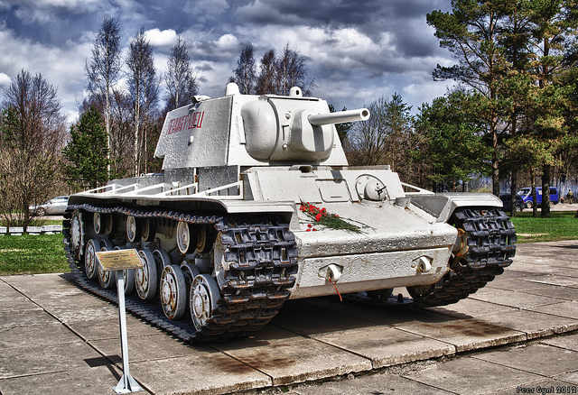

<div class="card">
    
    <div class="card-body">
        <h5 class="card-title">KV-1 - Neuvostoliittolainen raskas panssarivaunu</h5>
        <p class="card-text">
            KV-1 on suhteellisen helppo tuhota saksalaisilla 75mm PaK kanuunoilla mutta alle 75mm kanuunat näkevät
            vaikeuksia yrittäessään läpäistä KV-1:stä edestä.
        </p>
        <p class="card-text">
            KV-1 On hankala vastus kaikille vaunuille urbaaneissa olosuhteissa, sillä sitä on vaikea kiertää ottamatta
            ammusta omaan vaunuunsa nopeasti lataavasta voimakkaasta 76mm kanuunasta
        </p>
        <a href="http://wiki.warthunder.com/index.php?title=KV-1_ZiS-5" class="btn btn-link">KV-1 War Thunderin Wikissä</a>
    </div>
</div>